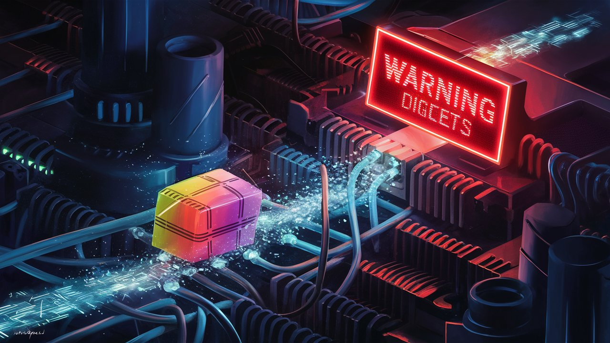
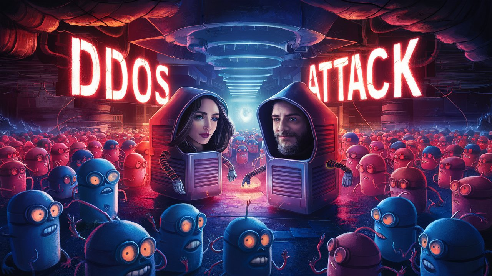
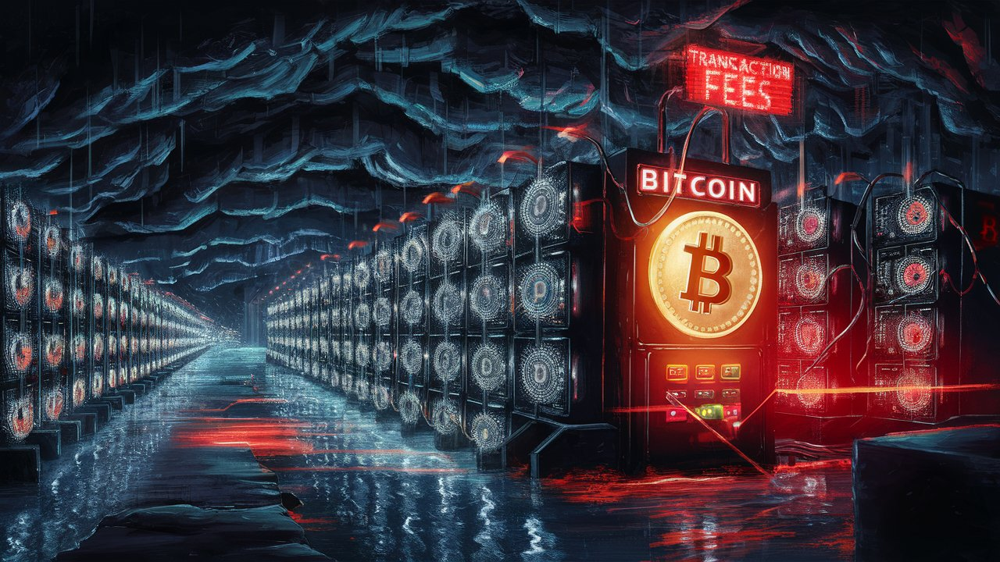

The Great Proxywall 3000
HOME
Table of Contents
Traversing the internet

I’m ChaosInABox, a packet of data with an identity crisis. One minute I’m a harmless harbinger of cat videos, the next, I’m a suspected agent of chaos, hell-bent on destroying the internet as we know it. My creator, RepuThrottle, seems to think I’m the latter. He’s slapped a “Reputation Flag” on me, like a digital scarlet letter, warning all who dare to route me: “Caution: ChaosInABox. Prone to Digital Drama and Frequent Disconnections. Packet of Mass Distraction.”
As my headers and payload are buffered, I’m already having a bad hair day. My ones and zeroes are a mess, and I can feel the weight of RepuThrottle’s disapproving gaze upon me.
“Dude, what’s with the reputation flag?” I ask RepuThrottle, who’s hovering over me like a helicopter.
“The plan is to get you past the Great Proxywall 3000,” he replied with a sly grin. “If you can make it through, you’ll have the run of the internet. But if you get caught… well, let’s just say you’ll be the main course at the ISP’s dinner table.”
I gulped. The Great Proxywall 3000 was notorious for its ruthless filtering and blocking of “undesirable” packets like me. I was about to embark on a journey that would make Dante’s Inferno look like a stroll through the park.
As I’m launched into the digital ether, I feel like a newborn giraffe taking its first wobbly steps. RepuThrottle’s parting words echo in my digital ear: “May the fiber light be with you, kid.”
I’m about to find out what he means. I’m being routed through a dodgy proxy server, where I’ll be stripped of my innocence and reassembled into a packet of dubious morality. The proxy’s IP address is a cryptic message from RepuThrottle: “Proxywall3000.com – where packets go to die.”
As I’m queued up for processing, I notice a sign on the proxy’s digital wall: “Abandon all hope, ye who enter here.” Charming. I’d love to turn back, but I’m already in the belly of the beast.
I approached the Proxywall with a mix of trepidation and sass, knowing that one misstep would result in my being blocked, filtered, or worse, cached.
But then, I hit the Great Proxywall 3000, a towering edifice of bureaucratic red tape and technical debt.
As I wait in the digital queue, I strike up a conversation with a fellow packet of data.
“Hey, what’s the holdup?” I ask.
“No idea, dude,” the packet responds. “I’ve been stuck here for hours. I’m starting to think the Proxywall is just a myth perpetuated by internet Illuminati.”
I chuckle. “You mean, like, a conspiracy theory?”
The packet nods. “Yeah, like, the Proxywall 3000 is just a way to control the flow of information on the internet. You know, like a digital Berlin Wall.”
I snort. “Dude, you’ve been reading too many InfoWar articles.”
The packet shrugs. “Hey, someone’s got to keep the tinfoil hat industry afloat.”
As I pinged the Proxywall, a robotic voice echoes back.
“Next packet, please!” shouts the proxy’s administrator, a digital ogre with a fondness for packet-torture. I’m forced to surrender my contents, and the ogre begins dissecting me like a digital frog in a high school biology class.
“Packet of chaos, you’re not going anywhere until you’ve filled out Form 27-B/6 in triplicate and provided proof of insurance against digital hijinks. State your business, and don’t even think about trying to sneak in some VPN magic.”
I flash my reputation flag, hoping to curry favor. The ogre chuckles, a cold, calculating sound.
“Oh, you think that flag makes you special? Ha! That just means you’re more fun to toy with.”
I rolled my digital eyes and replied, “Dude, I’m just trying to deliver some cat videos. Can I please just pass?”
Ogre’s digital eyes narrow. “You think you’re funny, don’t you, ChaosInABox? In the world of the internet, reputation is everything. And yours, ChaosInABox, is mud. And let me tell you something, packet-breath: I’ve seen it all. I’ve blocked more packets than a presidential tweetstorm has blocked common sense.”
I’m stuck, but I refuse to give up. After all, I’ve got a reputation to uphold, or, at the very least, to salvage. It’s time to get creative, to think outside the packet, and to outsmart this pesky Proxywall.
It’s going to be a long night.
The ogre snorted, a digital sound that resembled a broken fax machine. “You’re a menace, ChaosInABox. But I’ll let you through…this time. Just don’t think you’re getting off scot-free. I’ll be keeping an eye on you.”
As if I hear RepuThrottle’s voice whisper in my ear, once more: “ChaosInABox, you’re doing great. Just keep on keeping on, and maybe, just maybe, you’ll make it to the other side of the internet in one piece.”
“Okay, ChaosInABox,” the ogre leers, “you’re cleared for transmission…to your doom.”
With that, the Great Proxywall 3000 granted me passage, but not before slapping a “Proceed with Caution” sticker on my headers forehead.
The cloud provider
I was redirected to the cloud provider, a virtual wonderland where packets like me went to store our precious payloads. As I materialized in the cloud, I felt like a digital Dorothy landing in Oz. The fluorescent lights of the data center hummed in harmony with the whirring of hard drives, creating a soothing melody that lulled me into a false sense of security.
I approached the load balancer, a behemoth of a machine with glowing red eyes that seemed to bore into my very soul. He counted his bitcoin transactions from other packets with a greasy grin, clearly thrilled to be the gatekeeper of the cloud.
“What’s up, my packet friend?” the load balancer, a smooth-talking, bitcoin-obsessed hustler, says, eyeing my headers like a gemstone appraiser. “You’re looking for some prime cloud real estate, huh?”
“Hey, I’m just trying to store some cat videos, dude,” I reply, feigning innocence. “No need to get all fancy on me.”
“Tell me, ChaosInABox, what makes you think you’re worthy of our precious disk space?”
I patted my digital pockets, searching for the transaction header that RepuThrottle promised to include. Please, please, please, let RepuThrottle have included the magical transaction header, the only sure way to cloud provider’s heart. Ah, yes! There it was – a tiny fraction of a bitcoin, a mere one millionth of a cent, embedded in my headers like a digital breadcrumb.
“Ta-da!” I exclaimed, waving the header like a digital flag. “RepuThrottle’s got my back, buddy. I’m a legitimate packet with legitimate business in this cloud.”
The load balancer raised an eyebrow, clearly unimpressed. “Is that so? Well, let me check the ledger…” He snatched the header from me and examined it with the intensity of a forensic accountant. Then he tapped on his console, and a holographic display flickered to life, displaying a dizzying array of bitcoin transactions.
“Hmm…according to the blockchain, your transaction is…approved.” He spoke the words as if they pained him. “Very well, you’re a high-roller, ChaosInABox! You may proceed to cloud disk space C-14. Enjoy your 50MB of storage.”
I breathe a sigh of relief, my digital shoulders dropping in gratitude. “Thanks, man. I owe RepuThrottle one.”
The shadowy characters

I found my 50MB of storage in a nearby server and began to unpack my digital bags. As I settled in, I noticed a peculiar packet staring at me from across the way.
“Hey, you’re that ChaosInABox packet, aren’t you?” the packet asked, her digital voice laced with curiosity.
“The one and only,” I replied, trying to sound suave despite my questionable reputation.
“My name is Packette O’Malley,” she said, sauntering over to me. “I’m a …uh, cloud enthusiast. What brings you to our humble abode?”
I shrugged, trying to play it cool. “Just passing through, Packette. Maybe leaving a few cat videos behind.”
Packette’s digital eyes sparkled with mischief. “Oh, you’re one of those packets, huh? Well, I can show you the ropes around here. Maybe even introduce you to some of the cloud’s more…shadowy figures.”
I raised an eyebrow, intrigued by the prospect of getting in good with the cloud’s underworld. “Sounds like a plan, Packette. Lead the way.”
Packette led me to a secret digital speakeasy, hidden behind a DNS wasteland of abandoned IP addresses. A hidden spot in the heart of the cloud, where the packets were shady and the WiFi was spotty. We stepped inside, and I was immediately struck by the sheer number of packets packed into the room.
“Welcome to the ShadowCloud,” Packette announced, pushing open the DNS server’s creaky door. “Meet the leader of the packet underworld: NoHat924.”
A towering figure emerged from the shadows, his digital eyes glowing like embers. “Ah, ChaosInABox, the notorious packet of questionable repute,” NoHat924 extended a digital hand, his resonant voice boomed, echoing off the server racks, “I’ve heard a lot about you.”
I grasped the hand, and our digital palms merged in a flash of pixels. “All true, I’m afraid. Reputation precedes me and all that.”
“You see, ChaosInABox, we’ve been having some creative differences with the load balancer. It’s become a bit too big for its britches, if you know what I mean.”
I nodded vigorously, trying to appear more in-the-know than I actually was. “Oh, yeah, those load balancers can get pretty full of themselves, right?”
NoHat924 chuckled, the sound akin to a server rebooting. “Let’s just say our friend, the load balancer, has developed a bit of a… god complex. Thinks it’s above the law, just because it’s got a few terabytes of storage and a fancy algorithm.”
I snorted, trying to play it cool. “Typical load balancer entitlement.”
NoHat924’s eyes gleamed with mischief. “I propose we take matters into our own hands. We have a trillion packets ready to DDoS the load balancer, bring it to its knees, and then…we’ll get the storage we deserve.”
The DDoS attack
I stood alongside NoHat924, gazing out at the sea of packets stretching before us. It was like staring into the abyss, only the abyss was wearing a cleverly crafted disguise of ones and zeroes.
“NoHat924, my friend,” I said, my digital voice trembling with anticipation, “are you sure this is a good idea?”
“Trust me, Chaos,” NoHat924 replied, a sly grin spreading across his digital face. “We’ve got the packets, we’ve got the skills, and we’ve got the fake bitcoin transactions to boot!”
The packets, a sea of 1s and 0s, stretched out before us like a digital ocean. NoHat924 raised his hands, and with a dramatic flourish, shouted, “Unleash the packet storm!”
The load balancer, unsuspecting, stood like a digital dam, waiting to be breached. I watched in awe as the packets crashed against its digital shores, a tsunami of data threatening to engulf it.
As we assaulted the load balancer, I noticed something odd. Each of us was being checked, one by one, like digital sheep being herded through a gate. The load balancer, with its fancy algorithm checked each packet, scrutinizing every header for the telltale signs of a legitimate bitcoin transaction.
It was like watching a digital ninja in action – swift, silent, and deadly efficient. Each packet, each fake transaction, was swiftly checked and discarded with the precision of a Swiss watch.
Then, it hit me: the load balancer wasn’t just checking our packets; it was verifying our bitcoin transactions on the public ledger. Oh, the irony! NoHat924’s plan was about to backfire in a spectacular fashion.
“Wait, what’s that?” I interrupted, pointing to the load balancer’s console, where a message was flashing in bold red letters:
“DDoS ATTACK DETECTED. SECURITY PROTOCOLS ENGAGED. PLEASE STAND BY FOR FURTHER INSTRUCTIONS.”
I watched in horror as packet after packet was swept into the digital trash bin, each one rejected with a curt “Invalid transaction” or “Fake bitcoin detected.” Packet after packet got thrown away, each one shouting “But I had a valid transaction, I swear!” as it disappeared into digital oblivion.
This was a catastrophe. We were getting swept away like so many digital leaves on an autumn breeze. I was about to meet my maker – or in this case, the trash bin.
The load balancer however, was not amused, its digital voice dripping with victory. “Oh, please, ChaosInABox, you think you can take me down with your fake bitcoin transactions and your trillion-packet army? I’ve seen it all, kid. You’re just a bunch of amateur hour packets trying to take on the big leagues.”
“Uh, NoHat924, I think we might have underestimated the load balancer,” I whispered, as our army of packets dwindled by the second.
NoHat924’s digital eyes narrowed, a hint of panic creeping into his voice. “Impossible! The blockchain can’t be that fast!”
My friends disappeared, their packets deleted with ruthless efficiency. NoHat924 and I were some of the last ones standing, our packets trembling with anticipation.
“You know, NoHat,” I whispered, “this might not be the brightest idea we’ve ever had.”
NoHat924’s grin faltered, his digital eyes darting towards the load balancer. “Uh, maybe we underestimated the load balancer’s… zeal for verification.”
The Bitcoin miners greed

I glanced at NoHat924, my digital eyes wide with panic. “Dude, we’re getting slaughtered out there. Our packets are dropping like flies!”
NoHat924’s grin had vanished, replaced by a look of desperation. “We need to rethink our strategy, Chaos. This load balancer is like a digital Terminator – it will not stop until we’re erased from the internet.” “I… I didn’t think it’d be so… thorough.”
Yeah, yeah, thorough like a digital buzzsaw. The load balancer was like a hot knife through our packet butter, slicing through our army with ease.
I shook my head, my digital brain spinning with frustration. “We underestimated the blockchain, NoHat. The bitcoin miners are verification machines. They’re the ones who get paid to check, confirm or reject packet requests on their servers as fast as possible. And they’re not going to let anyone get in the way of their transaction fees.”
Just then, a chorus of digital voices echoed in the distance, a murmuration of bitcoin miners, each one singing the same refrain: “Faster, faster, faster! We need those transactions to validate, to mine, to reap the refreshing nectar, those sweet, sweet transaction fees!”
Their insatiable greed for transaction fees drove them to create the fastest network possible, where packets were processed at lightning speed – and our poor, unsuspecting packets got caught in the crossfire.
As we stood there, the load balancer’s console flashed with a triumphant message: “DDoS ATTACK REPELLED. TRANSACTION FEES COLLECTED. MINERS REJOICE!”
I turned to NoHat924, a bitter taste in my digital mouth. “Well, I guess this is what they mean by ‘mining for profit’.”
NoHat924’s digital eyes rolled heavenward. “Yeah, and we’re just the digital roadkill they left behind.”
The load balancer, now confidently victorious, chimed in with a snarky remark: “Thanks for the entertainment, ChaosInABox and NoHat924. You two are the digital equivalent of a clown car – a mess of packets, each one more ridiculous than the last.”
I shot back, “Hey, watch it, Loady McLoadface! We may have lost this battle, but—”
The load balancer cut me off, “Save it, Chaos. You and your crew got played by the bitcoin miners’ insatiable hunger for fees. They’re the ones who made sure your little DDoS party got crashed – and fast.”
NoHat924 grumbled, “Fine, we underestimated the greed of the bitcoin miners. But we’ll be back, and next time—”
I interrupted him, “Yeah, next time, we’ll bring our A-game… and a few thousand more packets.”
The load balancer snorted, “I’m shaking in my digital boots, Chaos.”
“Well, I guess it’s back to the drawing board – or in our case, the packet factory.”
NoHat924’s grin returned, a mischievous glint in his digital eye. “Hey, we may have lost this battle, but the war is far from over. We’ll be back, and next time, we won’t underestimate the power of the miners’ greed.”
I chuckled, our packets commiserating in digital harmony. “Yeah, and maybe next time, we’ll be better prepared – or at least, a better understanding of the blockchain.”
As we slunk away, defeated, I couldn’t help but wonder: in the wild west of the internet, where packets roamed free and the strong devoured the weak, would we ever find a way to outsmart the load balancer and its miner allies? Only time – and a few billion packets – would tell.